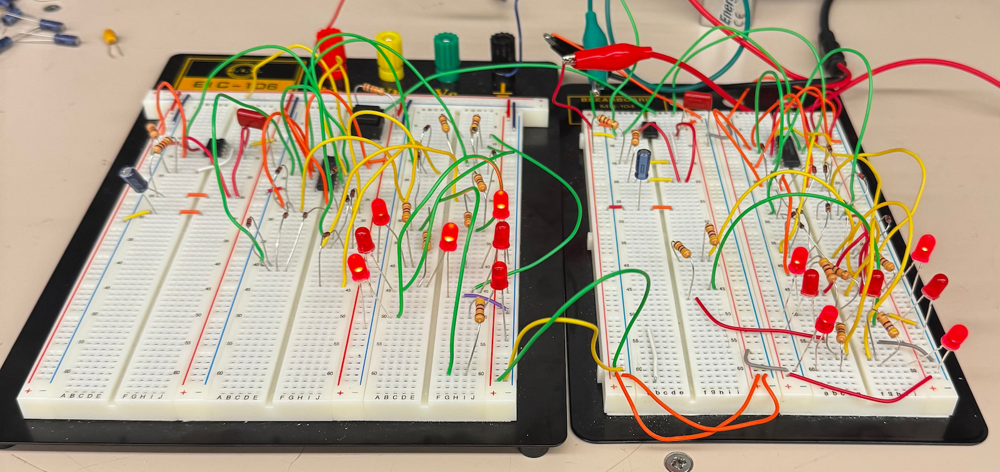
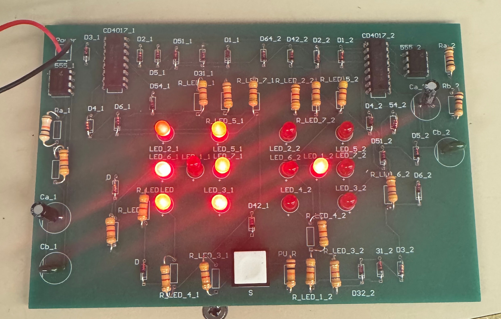

Two-Dice Electronic Randomizer
A hardware dice simulator built from a 555 timer and a CD4017 decade counter per die. Each 555 free-runs as an astable oscillator, clocking its counter through six states, and a diode matrix maps those states onto seven LEDs laid out in the standard pip pattern. A single pushbutton gates both counters at their clock-inhibit pins — hold it and both dice roll, release and both freeze. Because the oscillators never stop, the result depends entirely on release timing against an unsynchronized clock.
I started from a published single-die circuit and modified it in two ways that mattered. The original gated the 555's reset pin, which restarts the oscillator from a known state on every press and makes the first few counts predictable. I moved the button to the counter's clock-inhibit input instead, so the clock keeps running and only the display freezes. I also gave each die its own oscillator rather than sharing one — two counters driven from the same clock stay locked in a fixed offset and would show the same pair relationship on every roll.

Verification
I simulated the oscillator and counter in LTspice, then prototyped on breadboard with an oscilloscope on the 555 outputs. The staged approach found a defective 555 I was otherwise convinced was a wiring error — at a 92% duty cycle a working oscillator reads near Vcc on a multimeter and looks solidly lit on an LED, so I had to slow the clock to around 1 Hz to tell a real fault from a measurement artifact. LTspice couldn't model a user pressing a button, so the clock-inhibit behavior was designed from the CD4017 datasheet and verified on hardware.

Build videos
What I'd change
Each CD4017 output has to source every LED in its pip group, so a die showing six pulls far more current from one pin than a die showing one. A driver stage between the counter and the LEDs would keep brightness uniform across all faces. I also used a default resistor footprint without checking it against the parts I ordered, and the pad spacing came back tighter than the resistor bodies — the board works, but the resistors stand proud of it.
Designed in LTspice, prototyped on breadboard, routed in Altium, and hand-soldered after fabrication.
- 555 timer
- CD4017
- LTspice
- Altium
- PCB design
- hand soldering